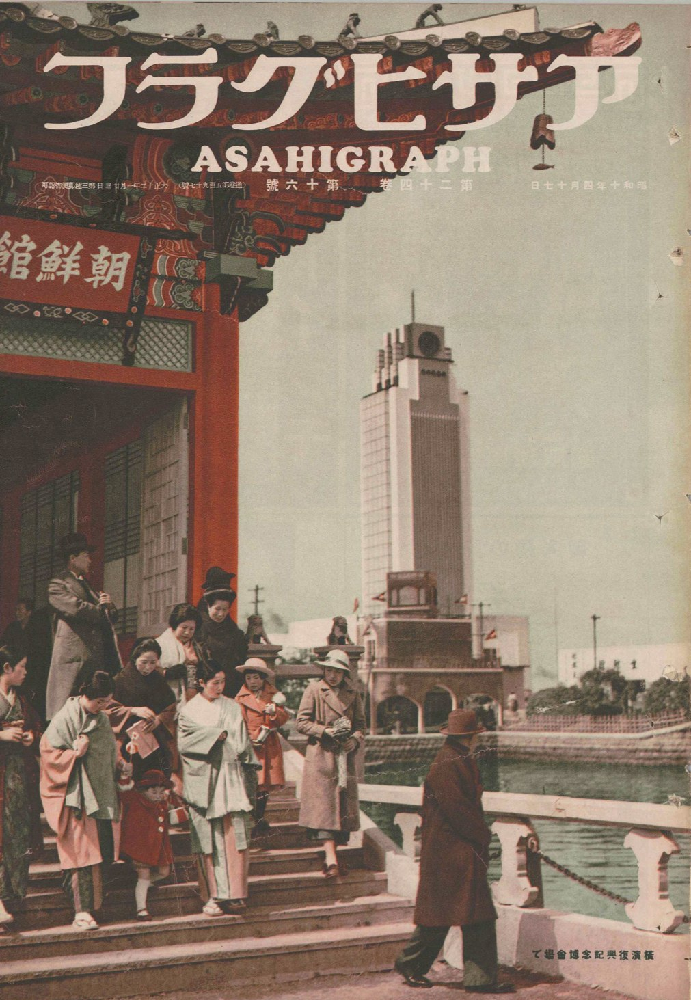

Nayoung Aimee Kwon, “Producers, Consumers, Collectors: The Ethnographic Turn in Colonial Culture”

Nayoung Aimee Kwon is Andrew W. Mellon Assistant Professor of Asian & Middle Eastern Studies, Arts of the Moving Image and Women’s Studies at Duke University. Her research considers colonialism and postcolonial legacies in the Asia-Pacific, focusing on Korea and Japan in the global context. Her book, Disavowed Intimacies: The Conundrum of Modernity and Collaboration in Korea and Japan (forthcoming from Duke University Press), examines controversial encounters of Japanese and Korean writers and translators in the Japanese empire and their postcolonial legacies. She has also co-edited (with Takashi Fujitani) of a special issue of the journal Cross-Currents (May 2013) on the antinomies of the colonial film archive in East Asia.
Nayoung Aimee Kwon
Saturday, September 28, 2013
Nayoung Aimee Kwon, “Producers, Consumers, Collectors: The Ethnographic Turn in Colonial Culture”
In the 1930s, with Japan’s expansions into the Asian continent, colonial Korean culture in general, and literature in particular, came to take important roles as both subject and object of such imperial expansions. This paper reexamines the colonizer and colonized binary by re-contextualizing the rise of translated texts packaged as ethnographic “colonial collections.” In particular, this paper historicizes the ethnographic turn relegated to colonial culture by examining the rise of colonial collections as a manifestation of mass-produced objects of colonial kitsch at this time. In turn, the complex position of the colonial artist/writer cum (self-)ethnographer situated in between the colony and the metropole embodies an uncanny contact zone as the artist and work of art become reified and sutured as objects of imperial consumer fetishism. In the colonial encounter, the artist as producer and the art object of his or her labor meld into indistinguishable and interchangeable forms, as producer and product of kitsch. In such relations of colonial alienation, cultural producers struggled to map out spaces as agents of artistic expression, while agency for the colonized artist often meant further alienation through self-ethnography or through mimicry of the colonizer’s racialized forms and discourses.